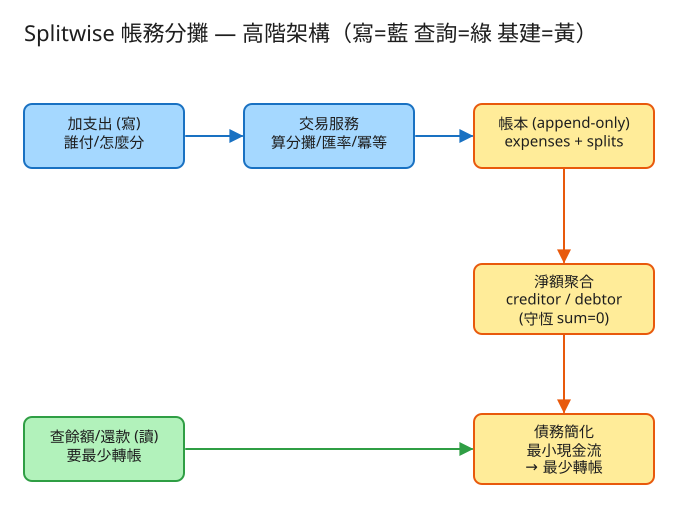

㊵ Splitwise 帳務分攤 · 初學者友善版
L 圖/演算法
看故事就懂
輕鬆讀 25 分鐘
🧠 這份怎麼讀？
這份用「大腦比較好吸收」的方式重寫：先講生活比喻 → 把系統拆成小關卡 → 邊讀邊考自己。
分成兩部分：Part 1 概念（這系統在幹嘛）、Part 2 工程細節（怎麼真的蓋出來，一樣白話）。
遇到 💭 停一下 就先自己想 3 秒再往下看——這叫「提取練習」，比一直往下滑記得更牢。
1. 60 秒搞懂它在幹嘛
想像你跟 3 個朋友去日本玩 5 天。一路上：Amy 先刷卡付了晚餐、Ben 墊了車錢、Cat 買了大家的票…
每筆錢誰先付、要分給誰，都亂七八糟。到了最後一晚，大家攤手問：「所以到底誰欠誰多少？怎麼還最省事？」
Splitwise 就是在解這件事。它做兩件核心的事：幫你記每一筆「誰墊了、怎麼分」，再把一團亂帳整理成「最少筆數的轉帳」就一次結清。
🔑 一句話
Splitwise = 一群朋友出遊的自動分帳機：記下每筆誰請客誰買單 → 算出每個人最後該收或該付多少 → 給你「轉幾次帳就全部結清」的最省事方案。
2. 三種分法：一頓飯怎麼分？
先從你最熟的場景開始：四個人吃一頓 1200 元的晚餐，Amy 先刷卡付了。這 1200 要怎麼分回給大家？有三種常見分法——
A均分：大家平均攤
最簡單：1200 ÷ 4 = 每人 300。大家吃得差不多，就均分。
⚠️ 一個小麻煩：除不盡怎麼辦？
如果是 1000 ÷ 3，每人 333.33…，這小數會出事。實務上把除不盡的那 1 元，分給前面幾個人多付（333、333、334），
這樣加起來剛好還是 1000，一塊錢都沒憑空消失。
B指定金額：誰吃多誰付多
Cat 點了牛排（多付）、Dan 只喝湯（少付），那就直接講好每個人各付多少：Cat 400、Dan 200、Amy 300、Ben 300。
規則：這幾個數字加起來一定要等於 1200，少一塊多一塊都不行。
C百分比：按比例分
公司聚餐，主管說「我出 40%，其他人平分 60%」——這就用百分比分，總和一定要是 100%。
系統再把百分比換算回實際金額（一樣會遇到「除不盡」，用同樣的補零方法處理）。
✅ 三種分法一句話
均分（大家一樣）、指定金額（講好各付多少，總和=總額）、百分比（按比例，總和=100%）。
不管哪種，分出去的加起來一定等於原本那筆。
💭 停一下：為什麼「分出去的加起來一定要等於原本那筆」這麼重要？
看答案
因為這是帳的命根子。如果 1200 的晚餐，分給大家卻只算了 1199 或 1201，那「憑空消失或多出來的一塊錢」最後會讓「誰欠誰」永遠對不齊。
保證「分攤總和 = 原始金額」，整個帳本才不會漏氣。這個規則之後會變成一個很重要的檢查：所有人最後的淨額加起來必須是 0。
3. 把系統拆成 3 個關卡
別被「系統」嚇到。整件事就是闖 3 關，一關一關來：
1記帳：把每一筆「誰墊、怎麼分」寫下來
每次有人付錢，就記一筆：誰付的、付了多少、用哪種分法、分給哪些人。
系統照分法算出「每個人這筆該分攤多少」，然後存起來。
🧾 比喻：旅遊記帳本
就像你們團體出遊時拿一本小冊子，每花一筆就寫一行：「晚餐 1200，Amy 付，四人均分」。只記、不塗改——
算錯了就再寫一筆「沖銷」，不會去擦掉舊的（這樣帳才查得回去）。
2結算：算出「每個人最後該收或該付多少」
記了一堆筆之後，把每個人的帳合併成一個數字：你總共墊了多少、減掉你該分攤多少。
⚖️ 比喻：每個人各算一個「淨額」
Amy 墊了很多但分攤不多 → 淨額是 正的（別人該還她，她是「債主」）；
Dan 都沒墊但吃了不少 → 淨額是 負的（他該付錢，是「欠款人」）。
所有人的淨額加起來，一定剛好是 0——有人收多少，就一定有人付多少，錢不會憑空生出來。
這個「正負相加=0」就叫守恆，是帳本永遠成立的鐵律。一旦不等於 0，代表前面某筆分攤算錯了。
3化簡：把一團亂帳，變成「最少筆轉帳」
現在問題來了。直接看記帳本，欠款關係超亂：Amy 欠 Ben、Ben 欠 Cat、Cat 又欠 Amy… 一團毛線球。
如果每筆都老實還，要轉好多次帳、跑好多趟。
🔄 比喻：三角債互相抵消
你欠我 100、我欠他 100 → 其實你直接付他 100 就好，我根本不用插手！
系統就是在做這個「能抵消的先抵消」，把一堆來來回回的欠款，化簡成「誰直接付給誰、最少幾筆」。
做法很直覺：每一輪，找該收最多的人（最大債主）和該付最多的人（最大欠款人）配成一對，
讓欠款人盡量還給債主，至少讓其中一個人歸零，重複到大家都歸零。N 個人最多只要 N−1 筆轉帳就結清。
✅ 三關一句話
① 記帳（誰墊、怎麼分）→ ② 結算（每人算一個淨額，相加=0）→ ③ 化簡（亂帳抵消成最少筆轉帳）。就這樣。
4. 設計時最怕的 3 件事
工程上的「取捨」聽起來很抽象。換個方式記：這個系統最怕三件事，每個設計都是為了避開某個「怕」。
😱 怕「算錯一分錢」
這是帳務系統，差一分錢都是 bug。最大的地雷是小數（浮點數）：電腦裡 0.1 + 0.2 居然不等於 0.3！
所以一律用「分」當整數來算（120 元就存成 12000 分），要顯示時才除以 100。絕不用小數。
😱 怕「帳不守恆」
如果哪天「所有人淨額加起來不是 0」，代表錢憑空多了或少了——帳本爛掉。
所以系統每次算完都主動檢查一次「總和是不是 0」，不是 0 就馬上抓出來，不讓錯誤蔓延。守恆是鐵律。
😱 怕「重複入帳」
手機網路不穩，「新增支出」可能送出去兩次（你以為失敗又按一次）。如果系統照單全收，這頓晚餐就被記了兩遍，帳全亂。
所以每筆寫入帶一個專屬編號，系統看到同編號第二次來，直接回上次的結果、不再記一筆（這叫冪等）。重送也只算一次。
5. 一張圖看懂

✏️ 用 Excalidraw 開啟編輯（diagram.excalidraw）
白話導讀，由左到右一路看：
- ✍️ 有人加一筆支出（誰付、多少、怎麼分）→
- 🧮 交易服務算出每人分攤、檢查冪等編號（沒重複才往下）→
- 📒 寫進帳本（只新增、不塗改，是唯一的「真相來源」）→
- ⚖️ 淨額結算把每人的墊付減分攤，算出「該收/該付」（相加=0）→
- 🔄 查還款時，債務化簡把亂帳抵消成「最少筆轉帳」回給你。
6. 名詞白話翻譯
看完上面，這些詞你其實都已經懂了，這裡只是把「工程術語 ↔ 白話」對起來，Part 2 會用到：
| 工程術語 | 白話解釋 |
|---|
| 分攤 (split) | 一筆錢要怎麼分回給大家（均分/指定/百分比） |
| 淨額 (net balance) | 每個人最後「該收（正）或該付（負）」的一個數字 |
| 債主 / 欠款人 | 淨額為正的人（該收）／淨額為負的人（該付） |
| 守恆 (sum=0) | 所有人淨額加起來一定是 0：有人收就有人付，錢不會生滅 |
| 最小現金流 | 把一團亂帳抵消，化簡成「最少筆數的轉帳」就結清 |
| 整數分 (cents) | 用「分」當整數算，避免小數誤差（120 元 = 12000 分） |
| 冪等 (idempotent) | 同一筆送幾次只算一次，不會重複入帳 |
| 帳本 (append-only) | 只新增、不塗改的記帳本；算錯用「沖銷」再記一筆 |
| 多幣別 / 匯率 | 用別國錢付的，照當下匯率換成群組共用的幣記帳 |
| API | 系統之間講好的「點餐單」格式：你給我什麼、我回你什麼 |
| QPS | 每秒幾筆請求（衡量「多忙」的單位） |
| 分片 (sharding) | 資料太多裝不下，拆成好幾個櫃子分開放 |
🛠️ Part 2 ｜ 工程細節（一樣白話）
概念懂了，來看「真的要動手蓋，得想清楚哪些事」。一樣用比喻，不用怕。
7. 要準備多大？（規模估算）
🍱 比喻：辦活動前先估人數
辦活動前，你會先估「大概來幾個人」，才決定訂幾個便當、租多大場地。
系統設計也一樣：先估數字，才知道要準備多大的「料」。這一步叫規模估算。
我們估幾個關鍵數字（數字不必背，重點是感受它的「形狀」）：
| 估什麼 | 大概數字 | 所以呢？ |
|---|
| 多少使用者 | ~5000 萬人 | 但大多是2~10 人的小群，每群帳很單純 |
| 多少群組 | 人均 5 群 ≈ 2.5 億群 | 群太多，一個資料庫塞不下，要拆櫃子（分片） |
| 每天加幾筆支出 | ~1000 萬筆/日 ≈ 每秒約 115 筆寫 | 寫不算多，單機帳本就能撐大部分 |
| 查帳 vs 加帳 | 查比加多 ~20 倍 | 「結算/看還款建議」要特別快 |
🎯 關鍵洞察：問題不在「總量」，在「少數巨無霸」
99% 的群都是幾個人的小群，結算和化簡都是一眨眼的事。真正會卡的是少數「百人旅遊團 + 上千筆支出」的超大群，
以及熱門群裡好幾個人同時加支出。所以設計重點是：每個群各管各的帳、淨額用「加一筆改一筆」而不是每次全部重算。
💭 停一下：百人團、上千筆支出，為什麼「每次查帳都全部重算」會出問題？
看答案
因為每查一次就要把上千筆支出從頭加總一遍，人一多、查的人一多，就一直重複做苦工、變慢。
改成增量維護：加一筆支出時，只動「跟這筆有關的那幾個人」的淨額，其他人不用碰。查的時候直接讀現成的淨額，飛快。8. 系統之間怎麼溝通？（API）
🍔 比喻：點餐單
API 就是兩個系統之間講好的「點餐單格式」：你要點什麼（給我哪些欄位）、我回你什麼。
講好格式，雙方就能合作，不用知道對方廚房怎麼運作。
這題只要記住三張「點餐單」：
① 加一筆支出（核心）
POST /groups/{群組}/expenses
附一個「冪等編號」 ← 重送不會記兩遍
給我：{ 誰付的, 金額(用「分」), 分法(均分/指定/百分比), 分給哪些人 }
我回：201 + 每個人這筆各分攤多少
金額用「分」傳（120 元寫成 12000）——從頭到尾都是整數，沒有小數能出錯。那個「冪等編號」是防呆關鍵：你手滑送兩次，第二次系統認得是同一筆，直接回上次結果、不重記。
② 看每個人的淨額（結算）
GET /groups/{群組}/balances
我回：{ 每人淨額(正=該收 負=該付), 總和:0, 守恆:true }
回傳裡特地附上 總和:0、守恆:true——這是系統每次都自我檢查一次的證明：所有人加起來真的歸零，帳沒漏氣。
③ 看最省事的還款建議（化簡）
GET /groups/{群組}/settle
我回：{ 轉帳清單:[ {從:Dan, 到:Cat, 金額:8000}, ... ], 原本:8筆, 簡化後:3筆 }
系統把一團亂帳跑「最小現金流」化簡，告訴你只要轉 3 筆就全部結清（而不是傻傻照原本 8 筆關係各還各的）。
9. 系統要記住哪些事？（資料模型）
📒 比喻：幾本筆記本
系統要把資料記在「筆記本」（資料表）裡。這題主要這幾本：
📒支出簿（每一筆誰墊了）
每筆支出一列：支出編號、群組、誰付的、金額(分)、分法、原幣別+匯率、冪等編號、時間。
為什麼「只新增、不塗改」？
這叫 append-only 帳本，是整個系統的「唯一真相」。改錯帳不能擦掉舊的，要記一筆反向的沖銷——
這樣帳永遠查得回去，也才能在出問題時「從頭重算驗證一次」。那個冪等編號設成不能重複，資料庫就會自動擋掉重送。
➗分攤簿（這筆分給每個人多少）
每筆支出會拆成好幾列：支出編號、某個人、他這筆分攤多少(分)。
把「一筆支出」和「每個人分攤多少」拆開存，同一列的分攤加起來一定等於那筆總額（守恆）。
⚖️淨額簿（每個人現在該收/該付）
每人一列：群組、某個人、淨額(分)。正=該收、負=該付。
這本是「現成答案」的快取——加一筆支出就順手更新相關幾人，查的時候直接讀。
就算它弄丟了也沒關係，隨時能從支出簿+分攤簿重算回來。
10. 哪裡會塞車、怎麼拓寬？（擴展）
🚗 比喻：找出塞車路段，拓寬它
系統變大時，總有某個環節會先「塞車」。工程師的工作就是找出最會塞的地方，把它拓寬。一個一個看：
| 哪裡會塞車 | 怎麼拓寬 |
|---|
| 百人團、上千筆，每次查帳全部重算 | 增量維護：加一筆只改相關幾人的淨額，不全部重算 |
| 熱門群多人同時加支出，淨額互相蓋掉 | 每群各管各帳 + 加鎖排隊；帳本只新增不衝突，結算分開做 |
| 長期老群支出爆多，翻歷史很慢 | 按群組分開存 + 一頁一頁翻；老資料搬去冷區 |
| 每次看還款建議都重跑化簡演算法 | 只有淨額變了才重算並把結果存起來；小群本來就秒算 |
| 2.5 億個群，一個資料庫裝不下 | 分片：照群組編號分到不同櫃子，同群資料放同一櫃，結算不用跨櫃 |
11. 還有哪些「魚與熊掌」？（取捨）
「Part 1 的三個怕」是核心。這裡補幾個常被面試官追問的：
⚖️ 最少轉帳 vs 看得懂原本欠誰
化簡成「最少筆轉帳」最省事（少跑幾趟），但「Amy 直接付 Cat」就看不出原本是 Amy 欠 Ben、Ben 欠 Cat。
所以有些 App 兩個都給你：原始明細 + 簡化建議，自己選。
⚖️ 完美最少 vs 夠快就好
其實「絕對最少筆數」是出名的超難題（NP-hard，理論上要試很多組合）。實務用貪婪法：每次先讓最大債主和最大欠款人對沖，
雖然不保證理論最優，但又快又夠好，業界都這樣做。面試講清楚「貪婪近似、最多 N−1 筆、為何不追求絕對最優」就夠。
⚖️ 立刻看到 vs 稍後一致
你加完一筆，馬上就想看到正確餘額（這叫「讀自己的寫」），所以帳本和淨額要強一致。
但「全平台統計報表」這種沒人盯著看的，可以慢一點再算（最終一致）就好。
💭 追問：有人要退款 / 記到負的金額怎麼辦？
記一筆反向支出就好（金額為負，或方向相反）。帳本只新增不塗改，退款也是「再記一筆」，守恆照樣成立。💭 追問：用日圓付、群組記台幣，匯率怎麼處理？
記帳當下就鎖定匯率，把原幣別和匯率一起存進帳本（可追溯）。匯率也用定點整數（如放大 100 萬倍）避免小數誤差，換算後一樣以「分」入帳。12. 動手玩玩看
讀十遍不如玩一遍。這題有一個真的可以跑的小程式，讓你親眼看到「三種分法 + 守恆 + 化簡」：
# 啟動（在這題的 demo 資料夾裡）
cd demo
php -S localhost:8040 -t public
# 然後瀏覽器打開 http://localhost:8040
- 先建幾個成員（Amy、Ben、Cat、Dan）。
- 加幾筆支出，故意用不同分法（一筆均分、一筆指定金額、一筆百分比）。
- 看「每人淨額」：注意正負相加是不是剛好 =0（守恆）。
- 按「最少轉帳建議」：看原本好幾筆欠款被化簡成幾筆就結清。
玩的時候想一下故意加一筆「除不盡」的（例如 1000 三人均分），看系統怎麼把那 1 元補給前面的人、總和還是剛好。再把同一筆支出送兩次，看淨額會不會被算兩遍——這就是冪等去重在保護你。
13. 考考自己
先不要看答案，自己用講給朋友聽的方式回答看看（講得出來才是真的懂）：
Q1：三種分攤方式各是什麼？用一頓晚餐的例子說說看。
均分（1200 四人各 300）、指定金額（牛排的 Cat 付多、喝湯的 Dan 付少，總和=1200）、百分比（主管出 40%、其餘平分 60%，總和=100%）。共通點：分出去的加起來一定等於原本那筆。Q2：什麼叫「淨額守恆」？為什麼一定是 0？
每個人算一個淨額（墊付減分攤），正=該收、負=該付。因為每筆支出「分出去的總和=原始金額」，所以這筆對全體淨額的貢獻是 +總額−總額=0。累積起來，全體淨額相加恆為 0——有人收就有人付，錢不會憑空生滅。Q3：什麼是「最小現金流」？用三角債的比喻說說看。
你欠我、我欠他，其實你直接付他就好，我不用插手。最小現金流就是把這種來回欠款先抵消，化簡成「誰直接付給誰、最少幾筆」。N 個人最多只要 N−1 筆轉帳就全部結清。Q4：為什麼帳務系統「絕不能用小數」？怎麼避開？
因為電腦的小數（浮點數）會有誤差，連 0.1+0.2 都不等於 0.3，累積下來帳就錯。改用「分」當整數算（120 元=12000 分），全程整數，要顯示才除以 100。Q5（工程）：加支出的 API 為什麼要帶「冪等編號」？
因為網路不穩，同一筆支出可能被送兩次。帶一個專屬編號，系統看到同編號第二次來，就直接回上次的結果、不再記一筆，避免重複入帳。資料庫對這欄設「不可重複」就能自動擋掉。Q6（工程）：為什麼把「支出」和「每人分攤」拆成兩本簿子？淨額簿又是幹嘛的？
拆開後，「每人分攤」可以方便地加總算出每人淨額，也容易驗證「分攤總和=支出金額」。淨額簿是「現成答案」的快取，加一筆就順手更新，查的時候直接讀；就算弄丟也能從支出簿+分攤簿重算回來，真相永遠是只新增不塗改的帳本。Q7（工程）：百人團上千筆支出，為什麼不要「每次查都全部重算」？怎麼改？
每次重算就要把上千筆從頭加總一遍，又慢又重複。改用「增量維護」：加一筆只動相關那幾個人的淨額，其他人不碰，查的時候讀現成的，飛快。14. 30 秒回顧
Splitwise = 一群朋友出遊的自動分帳機。
3 個關卡：① 記帳（誰墊、怎麼分）→ ② 結算（每人一個淨額，相加=0）→ ③ 化簡（亂帳抵消成最少筆轉帳）。
3 種分法：均分、指定金額、百分比——分出去的加起來一定等於原本那筆。
3 個怕：怕算錯一分錢（用整數分，不用小數）、怕帳不守恆（每次檢查總和=0）、怕重複入帳（冪等編號擋重送）。
工程細節一句話：瓶頸在少數超大群與熱門群 → 每群各管各帳、淨額增量維護 → 用「點餐單(API)」溝通、帳本只新增不塗改 → 群太多就分片。
想看更精簡、面試速查用的版本？👉 前往完整版（同樣內容的工程速查格式）。